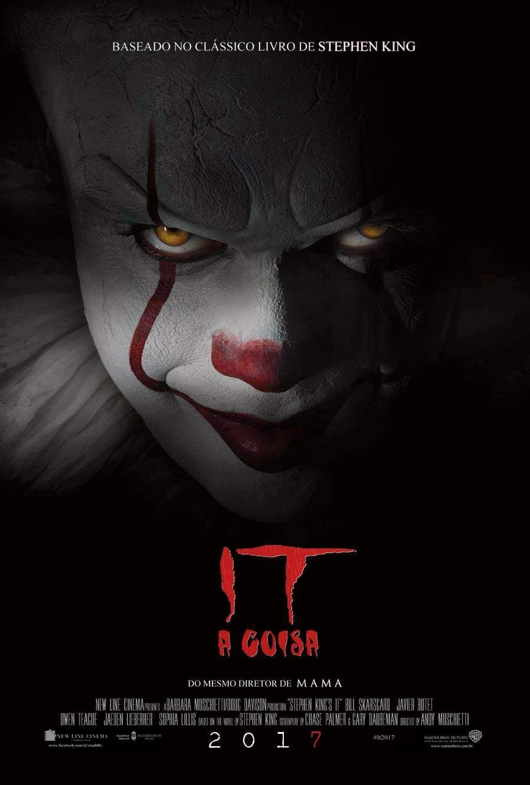
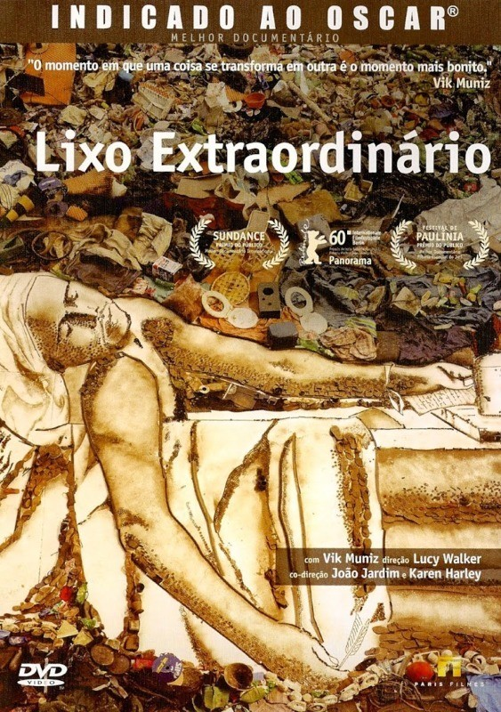

Vingadores Ultimato - AÇÃO
Após Thanos eliminar metade das criaturas vivas, os Vingadores têm de lidar com a perda de amigos e
entes queridos. Com Tony Stark vagando perdido no espaço sem água e comida, Steve Rogers e Natasha
Romanov lideram a resistência contra o titã louco.
Disney +

It: A Coisa - TERROR
Um grupo de crianças se une para investigar o misterioso desaparecimento de vários jovens em sua
cidade. Eles descobrem que o culpado é Pennywise, um palhaço cruel que se alimenta de seus medos e
cuja violência teve origem há vários séculos.
Max

Lixo Extraordinário - DOCUMENTÁRIO
Uma análise sobre o trabalho do artista plástico Vik Muniz no Jardim Gramacho, localizado na cidade
de Duque de Caxias (RJ), que é um dos maiores aterros sanitários do mundo.
YouTube

Cobra Kai - SÉRIE
Trinta e quatro anos depois de Daniel Larusso (Ralph Macchio) e Johnny Lawrence (William Zabka) se
enfrentarem, a rivalidade entre os dois ressurge quando Lawrence decide retomar sua vida por meio do
infame dojo Cobra Kai.
Netflix